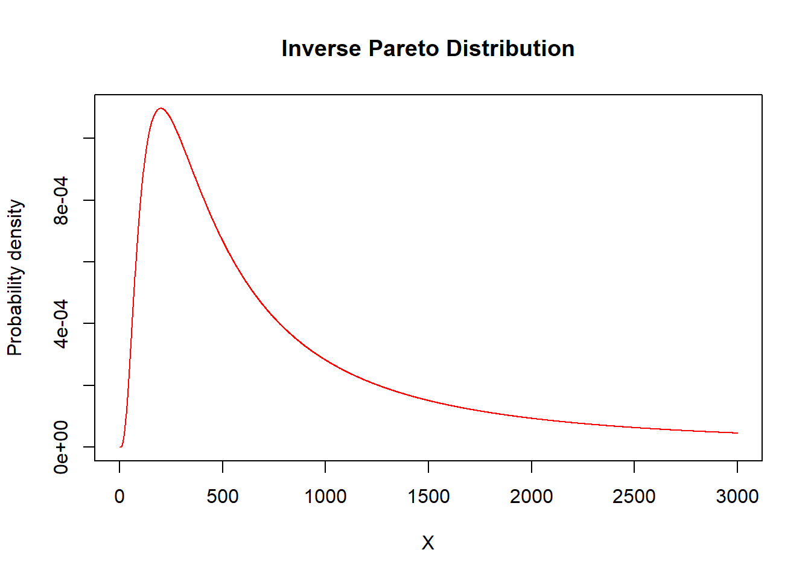

Chapter 1 Appendix D: Summary of Distributions
User Notes
- The
Rfunctions are from the packagesactuarandinvgamma. - Tables appear when first loaded by the browser. To hide them, click on one of the distributions, e.g., Poisson, and then click on the Hide button.
- More information on the
Rcodes is available at the R Codes for Loss Data Analytics site.
1.1 Discrete Distributions
Overview. This section summarizes selected discrete probability distributions used throughout Loss Data Analytics. Relevant functions and R code are provided.
1.1.1 The (a,b,0) Class
Poisson
Functions
\[ \begin{matrix} \begin{array}{l|c} \hline \text{Name} & \text{Function} \\ \hline \small{\text{Parameter assumptions}} & \lambda>0 \\ \hline ~~p_0 & e^{-\lambda} \\ \hline \small{\text{Probability mass function}} & \frac{e^{-\lambda}\lambda^k}{k!} \\ ~~p_k & \\ \hline \small{\text{Expected value}} & \lambda \\ ~~\mathrm{E}[N] & \\ \hline \small{\text{Variance}} & \lambda \\ \hline \small{\text{Probability generating function}} & e^{\lambda(z-1)} \\ ~~P(z) & \\ \hline a \small{\text{ and }} b \small{\text{ for recursion}} & a=0 \\ & b=\lambda \\ \hline \end{array} \end{matrix} \]
R Commands
\[ \begin{matrix} \begin{array}{l|c} \hline \text{Function Name} & \text{R Command} \\ \hline \small{\text{Probability mass function}} & \text{dpois}(x=, lambda=\lambda) \\ \hline \small{\text{Distribution function}} & \text{ppois}(p=, lambda=\lambda) \\ \hline \small{\text{Quantile function}} & \text{qpois}(q=, lambda=\lambda) \\ \hline \small{\text{Random sampling function}} & \text{rpois}(n=, lambda=\lambda) \\ \hline \end{array} \end{matrix} \]
Geometric
Functions
\[ \begin{matrix} \begin{array}{l|c} \hline \text{Name} & \text{Function} \\ \hline \small{\text{Parameter assumptions}} & \beta>0 \\ \hline ~~p_0 & \frac{1}{1+\beta} \\ \hline \small{\text{Probability mass function}} & \frac{\beta^k}{(1+\beta)^{k+1}} \\ ~~p_k & \\ \hline \small{\text{Expected value}} & \beta \\ ~~\mathrm{E}[N] & \\ \hline \small{\text{Variance}} & \beta(1+\beta) \\ \hline \small{\text{Probability generating function}} & [1-\beta(z-1)]^{-1} \\ ~~P(z) & \\ \hline a \small{\text{ and }} b \small{\text{ for recursion}} & a=\frac{\beta}{1+\beta} \\ & b=0 \\ \hline \end{array} \end{matrix} \]
R Commands
\[ \begin{matrix} \begin{array}{l|c} \hline \text{Function Name} & \text{R Command} \\ \hline \small{\text{Probability mass function}} & \text{dgeom}(x=, prob=\frac{1}{1+\beta}) \\ \hline \small{\text{Distribution function}} & \text{pgeom}(p=, prob=\frac{1}{1+\beta}) \\ \hline \small{\text{Quantile function}} & \text{qgeom}(q=, prob=\frac{1}{1+\beta}) \\ \hline \small{\text{Random sampling function}} & \text{rgeom}(n=, prob=\frac{1}{1+\beta}) \\ \hline \end{array} \end{matrix} \]
Binomial
Functions
\[ \begin{matrix} \begin{array}{l|c} \hline \text{Name} & \text{Function} \\ \hline \small{\text{Parameter assumptions}} & 0<q<1,~\text{m is an integer} \\ & 0 \leq k \leq m\\ \hline ~~p_0 &(1-q)^m \\ \hline \small{\text{Probability mass function}} & \binom{m}{k}q^k(1-q)^{m-k} \\ ~~p_k & \\ \hline \small{\text{Expected value}} & mq \\ ~~\mathrm{E}[N] & \\ \hline \small{\text{Variance}} & mq(1-q) \\ \hline \small{\text{Probability generating function}} & [1+q(z-1)]^m \\ ~~P(z) & \\ \hline a \small{\text{ and }} b \small{\text{ for recursion}} & a=\frac{-q}{1-q} \\ & b=\frac{(m+1)q}{1-q} \\ \hline \end{array} \end{matrix} \]
R Commands
\[ \begin{matrix} \begin{array}{l|c} \hline \text{Function Name} & \text{R Command} \\ \hline \small{\text{Probability mass function}} & \text{dbinom}(x=, size=m, prob=q) \\ \hline \small{\text{Distribution function}} & \text{pbinom}(p=, size=m, prob=q) \\ \hline \small{\text{Quantile function}} & \text{qbinom}(q=, size=m, prob=q) \\ \hline \small{\text{Random sampling function}} & \text{rbinom}(n=, size=m, prob=q) \\ \hline \end{array} \end{matrix} \]
Negative Binomial
Functions
\[ \begin{matrix} \begin{array}{l|c} \hline \text{Name} & \text{Function} \\ \hline \small{\text{Parameter assumptions}} & r>0, \beta>0 \\ \hline ~~p_0 & (1+\beta)^{-r} \\ \hline \small{\text{Probability mass function}} & \frac{r(r+1)\cdots(r+k-1)\beta^k}{k!(1+\beta)^{r+k}} \\ ~~p_k & \\ \hline \small{\text{Expected value}} & r\beta \\ ~~\mathrm{E}[N] & \\ \hline \small{\text{Variance}} & r\beta(1+\beta) \\ \hline \small{\text{Probability generating function}} & [1-\beta(z-1)]^{-r} \\ ~~P(z) & \\ \hline a \small{\text{ and }} b \small{\text{ for recursion}} & a=\frac{\beta}{1+\beta} \\ & b=\frac{(r-1)\beta}{1+\beta} \\ \hline \end{array} \end{matrix} \]
R Commands
\[ \begin{matrix} \begin{array}{l|c} \hline \text{Function Name} & \text{R Command} \\ \hline \small{\text{Probability mass function}} & \text{dnbinom}(x=, size=r, prob=\frac{1}{1+\beta}) \\ \hline \small{\text{Distribution function}} & \text{pnbinom}(p=, size=r, prob=\frac{1}{1+\beta}) \\ \hline \small{\text{Quantile function}} & \text{qnbinom}(q=, size=r, prob=\frac{1}{1+\beta}) \\ \hline \small{\text{Random sampling function}} & \text{rnbinom}(n=, size=r, prob=\frac{1}{1+\beta}) \\ \hline \end{array} \end{matrix} \]
1.1.2 The (a,b,1) Class
Zero Truncated Poisson
Functions
\[ \begin{matrix} \begin{array}{l|c} \hline \text{Name} & \text{Function} \\ \hline \small{\text{Parameter assumptions}} & \lambda>0 \\ \hline ~~p^T_1 & \frac{\lambda}{e^\lambda-1} \\ \hline \small{\text{Probability mass function}} & \frac{\lambda^k}{k!(e^\lambda-1)} \\ ~~p^T_k & \\ \hline \small{\text{Expected value}} & \frac{\lambda}{1-e^{-\lambda}} \\ ~~\mathrm{E}[N] & \\ \hline \small{\text{Variance}} & \frac{\lambda[1-(\lambda+1)e^{-\lambda}]}{(1-e^{-\lambda})^2} \\ \hline \small{\text{Probability generating function}} & \frac{e^{\lambda z}-1}{e^\lambda-1} \\ ~~P(z) & \\ \hline a \small{\text{ and }} b \small{\text{ for recursion}} & a=0 \\ & b=\lambda \\ \hline \end{array} \end{matrix} \]
R Commands
\[ \begin{matrix} \begin{array}{l|c} \hline \text{Function Name} & \text{R Command} \\ \hline \small{\text{Probability mass function}} & \text{dztpois}(x=, lambda=\lambda) \\ \hline \small{\text{Distribution function}} & \text{pztpois}(p=, lambda=\lambda) \\ \hline \small{\text{Quantile function}} & \text{qztpois}(q=, lambda=\lambda) \\ \hline \small{\text{Random sampling function}} & \text{rztpois}(n=, lambda=\lambda) \\ \hline \end{array} \end{matrix} \]
Zero Truncated Geometric
Functions
\[ \begin{matrix} \begin{array}{l|c} \hline \text{Name} & \text{Function} \\ \hline \small{\text{Parameter assumptions}} & \beta>0 \\ \hline ~~p^T_1 & \frac{1}{1+\beta} \\ \hline \small{\text{Probability mass function}} & \frac{\beta^{k-1}}{(1+\beta)^k} \\ ~~p^T_k & \\ \hline \small{\text{Expected value}} & 1+\beta \\ ~~\mathrm{E}[N] & \\ \hline \small{\text{Variance}} & \beta(1+\beta) \\ \hline \small{\text{Probability generating function}} & \frac{[1-\beta(z-1)]^{-1}-(1+\beta)^{-1}}{1-(1+\beta)^{-1}} \\ ~~P(z) & \\ \hline a \small{\text{ and }} b \small{\text{ for recursion}} & a=\frac{\beta}{1+\beta} \\ & b=0 \\ \hline \end{array} \end{matrix} \]
R Commands
\[ \begin{matrix} \begin{array}{l|c} \hline \text{Function Name} & \text{R Command} \\ \hline \small{\text{Probability mass function}} & \text{dztgeom}(x=, prob=\frac{1}{1+\beta}) \\ \hline \small{\text{Distribution function}} & \text{pztgeom}(p=, prob=\frac{1}{1+\beta}) \\ \hline \small{\text{Quantile function}} & \text{qztgeom}(q=, prob=\frac{1}{1+\beta}) \\ \hline \small{\text{Random sampling function}} & \text{rztgeom}(n=, prob=\frac{1}{1+\beta}) \\ \hline \end{array} \end{matrix} \]
Zero Truncated Binomial
Functions
\[ \begin{matrix} \begin{array}{l|c} \hline \text{Name} & \text{Function} \\ \hline \small{\text{Parameter assumptions}} & 0<q<1,~\text{m is an integer} \\ & 0 \leq k \leq m\\ \hline ~~p^T_1 & \frac{m(1-q)^{m-1}q}{1-(1-q)^m} \\ \hline \small{\text{Probability mass function}} & \frac{\binom{m}{k}q^k(1-q)^{m-k}}{1-(1-q)^m} \\ ~~p^T_k & \\ \hline \small{\text{Expected value}} & \frac{mq}{1-(1-q)^m} \\ ~~\mathrm{E}[N] & \\ \hline \small{\text{Variance}} & \frac{mq[(1-q)-(1-q+mq)(1-q)^m]}{[1-(1-q)^m]^2} \\ \hline \small{\text{Probability generating function}} & \frac{[1+q(z-1)^m]-(1-q)^m}{1-(1-q)^m} \\ ~~P(z) & \\ \hline a \small{\text{ and }} b \small{\text{ for recursion}} & a=\frac{-q}{1-q} \\ & b=\frac{(m+1)q}{1-q} \\ \hline \end{array} \end{matrix} \]
R Commmands
\[ \begin{matrix} \begin{array}{l|c} \hline \text{Function Name} & \text{R Command} \\ \hline \small{\text{Probability mass function}} & \text{dztbinom}(x=, size=m, prob=p) \\ \hline \small{\text{Distribution function}} & \text{pztbinom}(p=, size=m, prob=p) \\ \hline \small{\text{Quantile function}} & \text{qztbinom}(q=, size=m, prob=p) \\ \hline \small{\text{Random sampling function}} & \text{rztbinom}(n=, size=m, prob=p) \\ \hline \end{array} \end{matrix} \]
Zero Truncated Negative Binomial
Functions
\[ \begin{matrix} \begin{array}{l|c} \hline \text{Name} & \text{Function} \\ \hline \small{\text{Parameter assumptions}} & r>-1, r\neq0 \\ \hline ~~p^T_1 & \frac{r\beta}{(1+\beta)^{r+1}-(1+\beta)} \\ \hline \small{\text{Probability mass function}} & \frac{r(r+1)\cdots(r+k-1)}{k![(1+\beta)^r-1]}(\frac{\beta}{1+\beta})^k \\ ~~p^T_k & \\ \hline \small{\text{Expected value}} & \frac{r\beta}{1-(1+\beta)^{-r}} \\ ~~\mathrm{E}[N] & \\ \hline \small{\text{Variance}} & \frac{r\beta[(1+\beta)-(1+\beta+r\beta)(1+\beta)^{-r}]}{[1-(1+\beta)^{-r}]^2} \\ \hline \small{\text{Probability generating function}} & \frac{[1-\beta(z-1)]^{-r}-(1+\beta)^{-r}}{1-(1+\beta)^{-r}} \\ ~~P(z) & \\ \hline a \small{\text{ and }} b \small{\text{ for recursion}} & a=\frac{\beta}{1+\beta} \\ & b=\frac{(r-1)\beta}{1+\beta} \\ \hline \end{array} \end{matrix} \]
R Commands
\[ \begin{matrix} \begin{array}{l|c} \hline \text{Function Name} & \text{R Command} \\ \hline \small{\text{Probability mass function}} & \text{dztnbinom}(x=, size=r, prob=\frac{1}{1+\beta}) \\ \hline \small{\text{Distribution function}} & \text{pztnbinom}(p=, size=r, prob=\frac{1}{1+\beta}) \\ \hline \small{\text{Quantile function}} & \text{qztnbinom}(q=, size=r, prob=\frac{1}{1+\beta}) \\ \hline \small{\text{Random sampling function}} & \text{rztnbinom}(n=, size=r, prob=\frac{1}{1+\beta}) \\ \hline \end{array} \end{matrix} \]
Logarithmic
Functions
\[ \begin{matrix} \begin{array}{l|c} \hline \text{Name} & \text{Function} \\ \hline \small{\text{Parameter assumptions}} & \beta>0 \\ \hline ~~p^T_1 & \frac{\beta}{(1+\beta)ln(1+\beta)} \\ \hline \small{\text{Probability mass function}} & \frac{\beta^k}{k(1+\beta)^k \ln (1+\beta)} \\ ~~p^T_k & \\ \hline \small{\text{Expected value}} & \frac{\beta}{\ln (1+\beta)} \\ ~~\mathrm{E}[N] & \\ \hline \small{\text{Variance}} & \frac{\beta[1+\beta-\frac{\beta}{ln(1+\beta)}]}{\ln (1+\beta)} \\ \hline \small{\text{Probability generating function}} & 1-\frac{ln[1-\beta(z-1)]}{\ln (1+\beta)} \\ ~~P(z) & \\ \hline a \small{\text{ and }} b \small{\text{ for recursion}} & a=\frac{\beta}{1+\beta} \\ & b=\frac{-\beta}{1+\beta} \\ \hline \end{array} \end{matrix} \]
R Commands
\[ \begin{matrix} \begin{array}{l|c} \hline \text{Function Name} & \text{R Command} \\ \hline \small{\text{Probability mass function}} & \text{dnbinom}(x=,prob=\frac{\beta}{1+\beta}) \\ \hline \small{\text{Distribution function}} & \text{pnbinom}(p=,prob=\frac{\beta}{1+\beta}) \\ \hline \small{\text{Quantile function}} & \text{qnbinom}(q=,prob=\frac{\beta}{1+\beta}) \\ \hline \small{\text{Random sampling function}} & \text{rnbinom}(n=,prob=\frac{\beta}{1+\beta}) \\ \hline \end{array} \end{matrix} \]
1.2 Continuous Distributions
Overview. This section summarizes selected continuous probability distributions used throughout Loss Data Analytics. Relevant functions, R code, and illustrative graphs are provided.
1.2.1 One Parameter Distributions
Exponential
Functions
\[ \begin{matrix} \begin{array}{l|c} \hline \text{Name} & \text{Function} \\ \hline \small{\text{Parameter assumptions}} & \theta>0 \\ \hline \small{\text{Probability density}} & \frac{1}{\theta}e^{-x/\theta} \\ ~~ \small{\text{function }} f(x)& \\ \hline \small{\text{Distribution function}} & 1-e^{-x/\theta} \\ ~~F(x) & \\ \hline \textit{k}^{th}~\small{\text{raw moment}} & \theta^k\Gamma(k+1) \\ ~~\mathrm{E}[X^k] & k>-1 \\ \hline VaR_p(x) & -\theta \ln (1-p) \\ \hline \small{\text{Limited Expected Value}} & \theta(1-e^{-x/\theta}) \\ ~~\mathrm{E}[X\wedge x] & \\ \hline \end{array} \end{matrix} \]
R Commands
\[ \begin{matrix} \begin{array}{l|c} \hline \text{Function Name} & \text{R Command} \\ \hline \small{\text{Density function}} & \text{dexp}(x=, rate=1/\theta) \\ \hline \small{\text{Distribution function}} & \text{pexp}(p=, rate=1/\theta) \\ \hline \small{\text{Quantile function}} & \text{qexp}(q=, rate=1/\theta) \\ \hline \small{\text{Random sampling function}} & \text{rexp}(n=, rate=1/\theta) \\ \hline \end{array} \end{matrix} \]
Illustrative Graph
theta <- 100
X <- seq(from = 0, to = 1000, by = 1)
plot(x = X, y = dexp(X, rate = 1/theta), type = "l", ylab = "Probability density",
col = "red", main = "Exponential Distribution")
Inverse Exponential
Functions
\[ \begin{matrix} \begin{array}{l|c} \hline \text{Name} & \text{Function} \\ \hline \small{\text{Parameter assumptions}} & \theta>0 \\ \hline \small{\text{Probability density}} & \frac{\theta e^{-\theta/x}}{x^2} \\ ~~ \small{\text{function }} f(x)& \\ \hline \small{\text{Distribution function}} & e^{-\theta/x} \\ ~~F(x) & \\ \hline \textit{k}^{th}~\small{\text{raw moment}} & \theta^k\Gamma(1-k) \\ ~~\mathrm{E}[X^k] & k<1 \\ \hline \mathrm{E}[(X\wedge x)^k] & \theta^kG(1-k;\theta/x)+x^k (1 - e^{-\theta/x}) \\ \hline \end{array} \end{matrix} \]
R Commands
\[ \begin{matrix} \begin{array}{l|c} \hline \text{Function Name} & \text{R Command} \\ \hline \small{\text{Density function}} & \text{dinvexp}(x=, scale=\theta) \\ \hline \small{\text{Distribution function}} & \text{pinvexp}(p=, scale=\theta) \\ \hline \small{\text{Quantile function}} & \text{qinvexp}(q=, scale=\theta) \\ \hline \small{\text{Random sampling function}} & \text{rinvexp}(n=, scale=\theta) \\ \hline \end{array} \end{matrix} \]
Illustrative Graph
theta <- 0.01
X <- seq(from = 0, to = 1000, by = 1)
plot(x = X, y = dinvexp(X, rate = 1/theta), type = "l", ylab = "Probability density",
col = "red", main = "Inverse Exponential Distribution")
Single Parameter Pareto
Functions
\[ \begin{matrix} \begin{array}{l|c} \hline \text{Name} & \text{Function} \\ \hline \small{\text{Parameter assumptions}} & \theta~\text{is known},~x>\theta, \alpha > 0 \\ \hline \small{\text{Probability density}} & \frac{\alpha\theta^\alpha}{x^{\alpha+1}} \\ ~~ \small{\text{function }} f(x)& \\ \hline \small{\text{Distribution function}} & 1-(\theta/x)^\alpha \\ ~~F(x) & \\ \hline \textit{k}^{th}~\small{\text{raw moment}} & \frac{\alpha\theta^k}{\alpha-k} \\ ~~\mathrm{E}[X^k] & k < \alpha \\ \hline \mathrm{E}[(X\wedge x)^k] & \frac{\alpha\theta^k}{\alpha-k}-\frac{k\theta^{\alpha}}{(\alpha-k)x^{\alpha-k}} \\ & x \geq\theta \\ \hline \end{array} \end{matrix} \]
R Commands
\[ \begin{matrix} \begin{array}{l|c} \hline \text{Function Name} & \text{R Command} \\ \hline \small{\text{Density function}} & \text{dpareto1}(x=, shape=\alpha,min=\theta) \\ \hline \small{\text{Distribution function}} & \text{ppareto1}(p=, shape=\alpha,min=\theta) \\ \hline \small{\text{Quantile function}} & \text{qpareto1}(q=, shape=\alpha,min=\theta) \\ \hline \small{\text{Random sampling function}} & \text{rpareto1}(n=, shape=\alpha,min=\theta) \\ \hline \end{array} \end{matrix} \]
Illustrative Graph
alpha <- 3
theta <- 100
X <- seq(from = 0, to = 1000, by = 1)
plot(x = X, y = dpareto1(X, shape = alpha, min = theta), type = "l", ylab = "Probability density",
col = "red", main = "Single Parameter Pareto Distribution")
1.2.2 Two Parameter Distributions
Pareto
Functions
\[ \begin{matrix} \begin{array}{l|c} \hline \text{Name} & \text{Function} \\ \hline \small{\text{Parameter assumptions}} & \theta>0, \alpha>0 \\ \hline \small{\text{Probability density}} & \frac{\alpha\theta^\alpha}{(x+\theta)^{\alpha+1}} \\ ~~ \small{\text{function }} f(x)& \\ \hline \small{\text{Distribution function}} & 1-\Big(\frac{\theta}{x+\theta}\Big)^\alpha \\ ~~F(x) & \\ \hline \textit{k}^{th}~\small{\text{raw moment}} & \frac{\theta^k\Gamma(k+1)\Gamma(\alpha-k)}{\Gamma(\alpha)} \\ ~~\mathrm{E}[X^k] & -1<k<\alpha \\ \hline \small{\text{Limited Expected Value:}}~\alpha\neq1 & \frac{\theta}{\alpha-1}\Big[1-\Big(\frac{\theta}{x+\theta}\Big)^{\alpha-1}\Big] \\ ~~\mathrm{E}[X\wedge x] & \\ \hline \small{\text{Limited Expected Value:}}~\alpha=1 & -\theta \ln \left(\frac{\theta}{x+\theta}\right) \\ ~~\mathrm{E}[X\wedge x] & \\ \hline \mathrm{E}[(X\wedge x)^k] & \frac{\theta^k\Gamma(k+1)\Gamma(\alpha-k)}{\Gamma(\alpha)}\beta(k+1,\alpha-k;\frac{x}{x+\theta})+x^k(\frac{\theta}{x+\theta})^\alpha \\ \hline \end{array} \end{matrix} \]
R Commands
\[ \begin{matrix} \begin{array}{l|c} \hline \text{Function Name} & \text{R Command} \\ \hline \small{\text{Density function}} & \text{dpareto}(x=, shape=\alpha, scale=\theta) \\ \hline \small{\text{Distribution function}} & \text{ppareto}(p=, shape=\alpha,scale=\theta) \\ \hline \small{\text{Quantile function}} & \text{qpareto}(q=, shape=\alpha,scale=\theta) \\ \hline \small{\text{Random sampling function}} & \text{rpareto}(n=, shape=\alpha,scale=\theta) \\ \hline \end{array} \end{matrix} \]
Illustrative Graph
alpha <- 3
theta <- 200
X <- seq(from = 0, to = 1000, by = 1)
plot(x = X, y = actuar::dpareto(X, shape = alpha, scale = theta), type = "l", ylab = "Probability density",
col = "red", main = "Pareto Distribution")
Inverse Pareto
Functions
\[
\begin{matrix}
\begin{array}{l|c}
\hline
\text{Name} & \text{Function} \\
\hline
\small{\text{Parameter assumptions}} & \theta>0, \tau>0 \\
\hline
\small{\text{Probability density}} & \frac{\tau\theta x^{\tau-1}}{(x+\theta)^\tau-1} \\
~~ \small{\text{function }} f(x)& \\
\hline
\small{\text{Distribution function}} & \Big(\frac{x}{x+\theta}\Big)^\tau \\
~~F(x) & \\
\hline
\textit{k}^{th}~\small{\text{raw moment}} & \frac{\theta^k\Gamma(\tau+k)\Gamma(1-k)}{\Gamma(\tau)} \\
~~\mathrm{E}[X^k] & -\tau<k<1 \\
\hline
\mathrm{E}[(X\wedge x)^k] & \theta^k\tau\int^{x/(x+\theta)}_0~y^{\tau+k-1}(1-y)^{-k}dy+x^k[1-\Big(\frac{x}{x+\theta}\Big)^\tau] \\
& k>-\tau \\
\hline
\end{array}
\end{matrix}
\]
R Commands
\[ \begin{matrix} \begin{array}{l|c} \hline \text{Function Name} & \text{R Command} \\ \hline \small{\text{Density function}} & \text{dinvpareto}(x=, shape=\tau, scale=\theta) \\ \hline \small{\text{Distribution function}} & \text{pinvpareto}(p=, shape=\tau,scale=\theta) \\ \hline \small{\text{Quantile function}} & \text{qinvpareto}(q=, shape=\tau,scale=\theta) \\ \hline \small{\text{Random sampling function}} & \text{rinvpareto}(n=, shape=\tau,scale=\theta) \\ \hline \end{array} \end{matrix} \]
Illustrative Graph
tau <- 5
theta <- 100
X <- seq(from = 0, to = 3000, by = 1)
plot(x = X, y = dinvpareto(X, shape = tau, scale = theta), type = "l", ylab = "Probability density",
col = "red", main = "Inverse Pareto Distribution")
Loglogistic
Functions
\[ \begin{matrix} \begin{array}{l|c} \hline \text{Name} & \text{Function} \\ \hline \small{\text{Parameter assumptions}} & \theta>0, \gamma > 0, u=\frac{(x/\theta)^\gamma}{1+(x/\theta)^\gamma} \\ \hline \small{\text{Probability density}} & \frac{\gamma(x/\theta)^\gamma}{x[1+(x/\theta)^\gamma]^2} \\ ~~ \small{\text{function }} f(x)& \\ \hline \small{\text{Distribution function}} & u \\ ~~F(x) & \\ \hline \textit{k}^{th}~\small{\text{raw moment}} & \theta^k\Gamma(1+(k/\gamma))\Gamma(1-(k/\gamma)) \\ ~~\mathrm{E}[X^k] & -\gamma<k<\gamma \\ \hline \mathrm{E}[(X\wedge x)^k] & \theta^k\Gamma(1+(k/\gamma))\Gamma(1-(k/\gamma))\beta(1+(k/\gamma),1-(k/\gamma);u)+x^k(1-u) \\ & k>-\gamma \\ \hline \end{array} \end{matrix} \]
Illustrative Graph
Paralogistic
Functions
\[ \begin{matrix} \begin{array}{l|c} \hline \text{Name} & \text{Function} \\ \hline \small{\text{Parameter assumptions}} & \theta>0, \alpha>0, u=\frac{1}{1+(x/\theta)^\alpha} \\ \hline \small{\text{Probability density}} & \frac{\alpha^2(x/\theta)^\alpha}{x[1+(x/\theta)^\alpha]^{\alpha+1}} \\ ~~ \small{\text{function }} f(x)& \\ \hline \small{\text{Distribution function}} & 1-u^\alpha \\ ~~F(x) & \\ \hline \textit{k}^{th}~\small{\text{raw moment}} & \frac{\theta^k\Gamma(1+(k/\alpha))\Gamma(\alpha-(k/\alpha))}{\Gamma(\alpha)} \\ ~~\mathrm{E}[X^k] & -\alpha<k<\alpha^2 \\ \hline \mathrm{E}[(X\wedge x)^k] & \frac{\theta^k\Gamma(1+(k/\alpha))\Gamma(\alpha-(k/\alpha))}{\Gamma(\alpha)}\beta(1+(k/\alpha),\alpha-(k/\alpha);1-u)+x^ku^\alpha \\ & k>-\alpha \\ \hline \end{array} \end{matrix} \]
R Commands
\[ \begin{matrix} \begin{array}{l|c} \hline \text{Function Name} & \text{R Command} \\ \hline \small{\text{Density function}} & \text{dparalogis}(x=, shape=\alpha, scale=\theta) \\ \hline \small{\text{Distribution function}} & \text{pparalogis}(p=, shape=\alpha,scale=\theta) \\ \hline \small{\text{Quantile function}} & \text{qparalogis}(q=, shape=\alpha,scale=\theta) \\ \hline \small{\text{Random sampling function}} & \text{rparalogis}(n=, shape=\alpha,scale=\theta) \\ \hline \end{array} \end{matrix} \]
Illustrative Graph
alpha <- 2
theta <- 100
X <- seq(from = 0, to = 1000, by = 1)
plot(x = X, y = dparalogis(X, shape = alpha, scale = theta), type = "l", ylab = "Probability density",
col = "red", main = "Paralogistic Distribution")
Gamma
Functions
\[ \begin{matrix} \begin{array}{l|c} \hline \text{Name} & \text{Function} \\ \hline \small{\text{Parameter assumptions}} & \theta>0,~\alpha>0 \\ \hline \small{\text{Probability density}} & \frac{1}{\theta^{\alpha}\Gamma(\alpha)}x^{\alpha-1}e^{-x/\theta} \\ ~~ \small{\text{function }} f(x)& \\ \hline \small{\text{Distribution function}} & \Gamma(\alpha;\frac{x}{\theta}) \\ ~~F(x) & \\ \hline \textit{k}^{th}~\small{\text{raw moment}} & \theta^k\frac{\Gamma(\alpha+k)}{\Gamma(\alpha)} \\ ~~\mathrm{E}[X^k] & k>-\alpha \\ \hline & \frac{\theta^k\Gamma(k+\alpha)}{\Gamma(\alpha)}\Gamma(k+\alpha; x/\theta)+x^k[1-\Gamma(\alpha; x/\theta)] \\ ~~\mathrm{E}[X\wedge x]^k & k > -\alpha \\ \hline \end{array} \end{matrix} \]
R Commands
\[ \begin{matrix} \begin{array}{l|c} \hline \small{\text{Density function}} & \text{dgamma}(x=, shape=\alpha, scale=\theta) \\ \hline \small{\text{Distribution function}} & \text{pgamma}(p=, shape=\alpha,scale=\theta) \\ \hline \small{\text{Quantile function}} & \text{qgamma}(q=, shape=\alpha,scale=\theta) \\ \hline \small{\text{Random sampling function}} & \text{rgamma}(n=, shape=\alpha,scale=\theta) \\ \hline \end{array} \end{matrix} \]
Illustrative Graph
alpha <- 2
theta <- 50
X <- seq(from = 0, to = 1000, by = 1)
plot(x = X, y = dgamma(X, shape = alpha, scale = theta), type = "l", ylab = "Probability density",
col = "red", main = "Gamma Distribution")
Inverse Gamma
Functions
\[ \begin{matrix} \begin{array}{l|c} \hline \text{Name} & \text{Function} \\ \hline \small{\text{Probability density}} & \frac{(\theta/x)^\alpha e^{-\theta/x}}{x\Gamma(\alpha)} \\ ~~ \small{\text{function }} f(x)& \\ \hline \small{\text{Distribution function}} & 1-\Gamma(\alpha;\theta/x) \\ ~~F(x) & \\ \hline \textit{k}^{th}~\small{\text{raw moment}} & \frac{\theta^k\Gamma(\alpha-k)}{\Gamma(\alpha)} \\ ~~\mathrm{E}[X^k] & k<\alpha \\ \hline \mathrm{E}[(X\wedge x)^k] & \frac{\theta^k\Gamma(\alpha-k)}{\Gamma(\alpha)}[1-\Gamma(\alpha-k;\theta/x)]+x^k\Gamma(\alpha;\theta/x) \\ & \\ \hline \end{array} \end{matrix} \]
R Commands
\[ \begin{matrix} \begin{array}{l|c} \hline \text{Function Name} & \text{R Command} \\ \hline \small{\text{Density function}} & \text{dinvgamma}(x=, shape=\alpha, scale=\theta) \\ \hline \small{\text{Distribution function}} & \text{pinvgamma}(p=, shape=\alpha,scale=\theta) \\ \hline \small{\text{Quantile function}} & \text{qinvgamma}(q=, shape=\alpha,scale=\theta) \\ \hline \small{\text{Random sampling function}} & \text{rinvgamma}(n=, shape=\alpha,scale=\theta) \\ \hline \end{array} \end{matrix} \]
Illustrative Graph
alpha <- 3
theta <- 100
X <- seq(from = 0, to = 400, by = 1)
plot(x = X, y = dinvgamma(X, shape = alpha, scale = theta), type = "l", ylab = "Probability density",
col = "red", main = "Inverse Gamma Distribution")
Weibull
Functions
\[ \begin{matrix} \begin{array}{l|c} \hline \text{Name} & \text{Function} \\ \hline \small{\text{Parameter assumptions}} & \theta>0,\alpha>0 \\ \hline\ \small{\text{Probability density}} & \frac{\alpha \Big(\frac{x}{\theta}\Big)^\alpha \exp\Big(-\Big(\frac{x}{\theta}\Big)^\alpha\Big)}{x} \\ ~~ \small{\text{function }} f(x)& \\ \hline \small{\text{Distribution function}} & 1-\exp\Big(-\Big(\frac{x}{\theta}\Big)^\alpha\Big) \\ ~~F(x) & \\ \hline \textit{k}^{th}~\small{\text{raw moment}} & \theta^k \Gamma(1 + \frac{k}{\alpha}) \\ ~~\mathrm{E}[X^k] & k>-\alpha \\ \hline \mathrm{E}[(X\wedge x)^k] & \theta^k\Gamma(1+\frac{k}{\alpha})\Gamma\Big[1+\frac{k}{\alpha};\Big(\frac{x}{\theta}\Big)^\alpha\Big]+x^k\exp\Big(-\Big(\frac{x}{\theta}\Big)^\alpha\Big) \\ & k>-\alpha \\ \hline \end{array} \end{matrix} \]
R Commands
\[ \begin{matrix} \begin{array}{l|c} \hline \text{Function Name} & \text{R Command} \\ \hline \small{\text{Density function}} & \text{dweibull}(x=, shape=\alpha, scale=\theta) \\ \hline \small{\text{Distribution function}} & \text{pweibull}(p=, shape=\alpha,scale=\theta) \\ \hline \small{\text{Quantile function}} & \text{qweibull}(q=, shape=\alpha,scale=\theta) \\ \hline \small{\text{Random sampling function}} & \text{rweibull}(n=, shape=\alpha,scale=\theta) \\ \hline \end{array} \end{matrix} \]
Illustrative Graph
alpha <- 2
theta <- 100
X <- seq(from = 0, to = 1000, by = 1)
plot(x = X, y = dweibull(X, shape = alpha, scale = theta), type = "l", ylab = "Probability density",
col = "red", main = "Weibull Distribution")
Inverse Weibull
Functions
\[ \begin{matrix} \begin{array}{l|c} \hline \text{Name} & \text{Function} \\ \hline \small{\text{Parameter assumptions}} & \theta>0,\tau>0 \\ \hline\ \small{\text{Probability density}} & \frac{\tau(\theta/x)^\tau \exp\Big(-\Big(\frac{\theta}{x}\Big)^\tau\Big)}{x} \\ ~~ \small{\text{function }} f(x)& \\ \hline \small{\text{Distribution function}} & \exp\Big(-\Big(\frac{\theta}{x}\Big)^\tau\Big) \\ ~~F(x) & \\ \hline \textit{k}^{th}~\small{\text{raw moment}} & \theta^k\Gamma(1-(k/\tau)) \\ ~~\mathrm{E}[X^k] & k<\tau \\ \hline \mathrm{E}[(X\wedge x)^k] & \theta^k\Gamma(1-(k/\tau))[1-\Gamma(1-(k/\tau);(\theta/x)^\tau)]+x^k[1-e^{-(\theta/x)^\tau}] \\ & \\ \hline \end{array} \end{matrix} \]
R Commands
\[ \begin{matrix} \begin{array}{l|c} \hline \text{Function Name} & \text{R Command} \\ \hline \small{\text{Density function}} & \text{dinvweibull}(x=, shape=\tau, scale=\theta) \\ \hline \small{\text{Distribution function}} & \text{pinvweibull}(p=, shape=\tau,scale=\theta) \\ \hline \small{\text{Quantile function}} & \text{qinvweibull}(q=, shape=\tau,scale=\theta) \\ \hline \small{\text{Random sampling function}} & \text{rinvweibull}(n=, shape=\tau,scale=\theta) \\ \hline \end{array} \end{matrix} \]
Illustrative Graph
tau <- 5
theta <- 100
X <- seq(from = 0, to = 1000, by = 1)
plot(x = X, y = dinvweibull(X, shape = tau, scale = theta), type = "l", ylab = "Probability density",
col = "red", main = "Inverse Weibull Distribution")
Uniform
Functions
\[ \begin{matrix} \begin{array}{l|c} \hline \text{Name} & \text{Function} \\ \hline \small{\text{Parameter assumptions}} & -\infty<\alpha<\beta<\infty \\ \hline \small{\text{Probability density}} & \frac{1}{\beta-\alpha} \\ \text{f(x)} & \\ \hline \small{\text{Distribution function}} & \frac{x-\alpha}{\beta-\alpha} \\ ~~F(x) & \\ \hline \text{Mean} & \frac{\beta+\alpha}{2} \\ \text{E[X]} & \\ \hline \text{Variance} & \frac{(\beta-\alpha)^2}{12} \\ E[(X-\mu)^2] & \\ \hline \mathrm{E}[(X-\mu)^k] & \mu_k=0~~~\text{for odd }\textit{k} \\ & \mu_k=\frac{(\beta-\alpha)^k}{2^k (k+1)}~~~\text{for even }\textit{k} \\ \hline \end{array} \end{matrix} \]
R Commands
\[ \begin{matrix} \begin{array}{l|c} \hline \text{Function Name} & \text{R Command} \\ \hline \small{\text{Density function}} & \text{dunif}(x=, min=a, max=b) \\ \hline \small{\text{Distribution function}} & \text{punif}(p=, min=a, max=b) \\ \hline \small{\text{Quantile function}} & \text{qunif}(q=, min=a, max=b) \\ \hline \small{\text{Random sampling function}} & \text{runif}(n=, min=a, max=b) \\ \hline \end{array} \end{matrix} \]
Illustrative Graph
Normal
Functions
\[ \begin{matrix} \begin{array}{l|c} \hline \text{Name} & \text{Function} \\ \hline \small{\text{Parameter assumptions}} & -\infty<\mu<\infty,~\sigma>0 \\ \hline \small{\text{Probability density}} & \frac{1}{\sqrt{2\pi}\sigma} \exp\left( -\frac{(x-\mu)^2}{2\sigma^2}\right) \\ \text{f(x)} & \\ \hline \small{\text{Distribution function}} & \Phi\left(\frac{x-\mu}{\sigma}\right) \\ ~~F(x) & \\ \hline \text{Mean} & \mu \\ \text{E[X]} & \\ \hline \text{Variance} & \sigma^2 \\ E[(X-\mu)^2] & \\ \hline \mathrm{E}[(x-\mu)^k] & \mu_k=0~~~\text{for even k} \\ & \mu_k=\frac{k!\sigma^2}{(\frac{k}{2})! 2^{k/2}}~~~\text{for odd k} \\ \hline \end{array} \end{matrix} \]
R Commands
\[ \begin{matrix} \begin{array}{l|c} \hline \text{Function Name} & \text{R Command} \\ \hline \small{\text{Density function}} & \text{dnorm}(x=, mean=\mu, sd=\sigma) \\ \hline \small{\text{Distribution function}} & \text{pnorm}(p=, mean=\mu, sd=\sigma) \\ \hline \small{\text{Quantile function}} & \text{qnorm}(q=, mean=\mu, sd=\sigma) \\ \hline \small{\text{Random sampling function}} & \text{rnorm}(n=, mean=\mu, sd=\sigma) \\ \hline \end{array} \end{matrix} \]
Illustrative Graph
mu <- 100
sigma <- 10
X <- seq(from = 0, to = 200, by = 1)
plot(x = X, y = dnorm(X, mean = mu, sd = sigma), type = "l", ylab = "Probability density",
col = "red", main = "Normal Distribution")
Cauchy
Functions
\[ \begin{matrix} \begin{array}{l|c} \hline \text{Name} & \text{Function} \\ \hline \small{\text{Parameter assumptions}} & -\infty <\alpha <\infty, \beta>0 \\ \hline \small{\text{Probability density}} & \frac{1}{\pi\beta}[1+\left( \frac{x-\alpha}{\beta}\right)^2]^{-1} \\ ~~ \small{\text{function }} f(x)& \\ \hline \end{array} \end{matrix} \]
R Commands
\[ \begin{matrix} \begin{array}{l|c} \hline \text{Function Name} & \text{R Command} \\ \hline \small{\text{Density function}} & \text{dcauchy}(x=, location=\alpha, scale=\beta) \\ \hline \small{\text{Distribution function}} & \text{pcauchy}(p=, location=\alpha, scale=\beta) \\ \hline \small{\text{Quantile function}} & \text{qcauchy}(q=, location=\alpha, scale=\beta) \\ \hline \small{\text{Random sampling function}} & \text{rcauchy}(n=, location=\alpha, scale=\beta) \\ \hline \end{array} \end{matrix} \]
Illustrative Graph
alpha <- 50
beta <- 100
X <- seq(from = 0, to = 1000, by = 1)
plot(x = X, y = dcauchy(X, location = alpha, scale = beta), type = "l", ylab = "Probability density",
col = "red", main = "Cauchy Distribution")
1.2.3 Three Parameter Distributions
Generalized Pareto
Functions
\[ \begin{matrix} \begin{array}{l|c} \hline \text{Name} & \text{Function} \\ \hline \small{\text{Parameter assumptions}} & \theta>0, \alpha>0, \tau>0, u=\frac{x}{x+\theta} \\ \hline \small{\text{Probability density}} & \frac{\Gamma(\alpha+\tau)}{\Gamma(\alpha)\Gamma(\tau)}\frac{\theta^\alpha x^{\tau-1}}{(x+\theta)^{\alpha+\tau}} \\ ~~ \small{\text{function }} f(x)& \\ \hline \small{\text{Distribution function}} & \beta(\tau,\alpha;u) \\ ~~F(x) & \\ \hline \textit{k}^{th}~\small{\text{raw moment}} & \frac{\theta^k\Gamma(\tau+1)\Gamma(\alpha-k)}{\Gamma(\alpha)\Gamma(\tau)} \\ ~~~~\mathrm{E}[X^k] & -\tau<k<\alpha \\ \hline \mathrm{E}[(X\wedge x)^k] & \frac{\theta^k\Gamma(\tau+k)\Gamma(\alpha-k)}{\Gamma(\alpha)\Gamma(\tau)}\beta(\tau+k,\alpha-k;u)+x^k[1-\beta(\tau,\alpha;u)] \\ & k>-\tau \\ \hline \end{array} \end{matrix} \]
R Commands
\[ \begin{matrix} \begin{array}{l|c} \hline \text{Function Name} & \text{R Command} \\ \hline \small{\text{Density function}} & \text{dgenpareto}(x=, shape1=\alpha, shape2=\tau, scale=\theta) \\ \hline \small{\text{Distribution function}} & \text{pgenpareto}(q=, shape1=\alpha, shape2=\tau, scale=\theta) \\ \hline \small{\text{Quantile function}} & \text{qgenpareto}(p=, shape1=\alpha, shape2=\tau, scale=\theta) \\ \hline \small{\text{Random sampling function}} & \text{rgenpareto}(r=, shape1=\alpha, shape2=\tau, scale=\theta) \\ \hline \end{array} \end{matrix} \]
Illustrative Graph
alpha <- 3
tau <- 5
theta <- 100
X <- seq(from = 0, to = 1000, by = 1)
plot(x = X, y = dgenpareto(X, shape1 = alpha, shape2 = tau, scale = theta), type = "l",
ylab = "Probability density", col = "red", main = "Generalized Pareto Distribution")
Burr
Functions
\[ \begin{matrix} \begin{array}{l|c} \hline \text{Name} & \text{Function} \\ \hline \small{\text{Parameter assumptions}} & \theta>0, \alpha>0, \gamma>0, u=\frac{1}{1+(x/\theta)^\gamma} \\ \hline \small{\text{Probability density}} & \frac{\alpha\gamma(x/\theta)^\gamma}{x[1+(x/\theta)^\gamma]^{\alpha+1}} \\ ~~ \small{\text{function }} f(x)& \\ \hline \small{\text{Distribution function}} & 1-u^\alpha \\ ~~F(x) & \\ \hline \textit{k}^{th}~\small{\text{raw moment}} & \frac{\theta^k\Gamma(1+(k/\gamma))\Gamma(\alpha-(k/\gamma))}{\Gamma(\alpha)} \\ ~~~~\mathrm{E}[X^k] & -\gamma<k<\alpha\gamma \\ \hline \mathrm{E}[(X\wedge x)^k] & \frac{\theta^k\Gamma(1+(k/\gamma))\Gamma(\alpha-(k/\gamma))}{\Gamma(\alpha)}\beta(1+(k/\gamma),\alpha-(k/\gamma);1-u)+x^ku^\alpha \\ & k>-\gamma \\ \hline \end{array} \end{matrix} \]
R Commands
\[ \begin{matrix} \begin{array}{l|c} \hline \text{Function Name} & \text{R Command} \\ \hline \small{\text{Density function}} & \text{dburr}(x=, shape1=\alpha, shape2=\gamma, scale=\theta) \\ \hline \small{\text{Distribution function}} & \text{pburr}(p=, shape1=\alpha, shape2=\gamma, scale=\theta) \\ \hline \small{\text{Quantile function}} & \text{qburr}(q=, shape1=\alpha, shape2=\gamma, scale=\theta) \\ \hline \small{\text{Random sampling function}} & \text{rburr}(n=, shape1=\alpha, shape2=\gamma, scale=\theta) \\ \hline \end{array} \end{matrix} \]
Illustrative Graph
alpha <- 2
gamma <- 3
theta <- 100
X <- seq(from = 0, to = 1000, by = 1)
plot(x = X, y = dburr(X, shape1 = alpha, shape2 = gamma, scale = theta), type = "l",
ylab = "Probability density", col = "red", main = "Burr Distribution")
Inverse Burr
Functions
\[ \begin{matrix} \begin{array}{l|c} \hline \text{Name} & \text{Function} \\ \hline \small{\text{Parameter assumptions}} & \theta>0, \tau>0, \gamma>0, u=\frac{(x/\theta)^\gamma}{1+(x/\theta)^\gamma} \\ \hline \small{\text{Probability density}} & \frac{\tau\gamma(x/\theta)^{\tau \gamma}}{x[1+(x/\theta)^\gamma]^{\tau+1}} \\ ~~ \small{\text{function }} f(x)& \\ \hline \small{\text{Distribution function}} & u^\tau \\ ~~F(x) & \\ \hline \textit{k}^{th}~\small{\text{raw moment}} & \frac{\theta^k\Gamma(\tau+(k/\gamma))\Gamma(1-(k/\gamma))}{\Gamma(\tau)} \\ ~~~~\mathrm{E}[X^k] & -\tau\gamma<k<\gamma \\ \hline \mathrm{E}[(X\wedge x)^k] & \frac{\theta^k\Gamma(\tau+(k/\gamma))\Gamma(1-(k/\gamma))}{\Gamma(\tau)}\beta(\tau+(k/\gamma),1-(k/\gamma);u)+x^k[1-u^\tau] \\ & k>-\tau\gamma \\ \hline \end{array} \end{matrix} \]
R Commands
\[ \begin{matrix} \begin{array}{l|c} \hline \text{Function Name} & \text{R Command} \\ \hline \small{\text{Density function}} & \text{dinvburr}(x=, shape1=\tau, shape2=\gamma, scale=\theta) \\ \hline \small{\text{Distribution function}} & \text{pinvburr}(p=, shape1=\tau, shape2=\gamma, scale=\theta) \\ \hline \small{\text{Quantile function}} & \text{qinvburr}(q=, shape1=\tau, shape2=\gamma, scale=\theta) \\ \hline \small{\text{Random sampling function}} & \text{rinvburr}(n=, shape1=\tau, shape2=\gamma, scale=\theta) \\ \hline \end{array} \end{matrix} \]
Illustrative Graph
tau <- 2
gamma <- 3
theta <- 100
X <- seq(from = 0, to = 1000, by = 1)
plot(x = X, y = dinvburr(X, shape1 = tau, shape2 = gamma, scale = theta), type = "l",
ylab = "Probability density", col = "red", main = "Inverse Burr Distribution")
1.2.4 Four Parameter Distribution
Generalized Beta of the Second Kind (GB2)
Functions
\[ \begin{matrix} \begin{array}{l|c} \hline \text{Name} & \text{Function} \\ \hline \small{\text{Parameter assumptions}} & \theta>0, \alpha_1>0, \alpha_2>0, \sigma>0 \\ \hline \small{\text{Probability density}} & \frac{(x/\theta)^{\alpha_2/\sigma}}{x \sigma~\mathrm{B}\left( \alpha_1,\alpha_2\right)\left\lbrack 1 + \left( x/\theta \right)^{1/\sigma} \right\rbrack^{\alpha_1 + \alpha_2}} \\ ~~ \small{\text{function }} f(x) & \\ \hline \textit{k}^{th}~\small{\text{raw moment}} & \frac{\theta^{k}~\mathrm{B}\left( \alpha_1 +k \sigma,\alpha_2 - k \sigma \right)}{\mathrm{B}\left( \alpha_1,\alpha_2 \right)} \\ ~~~~\mathrm{E}[X^k] & \textit{k}>0 \\ \hline \end{array} \end{matrix} \]
R Commands
Please see the R Codes for Loss Data Analytics site for information about this distribution.
1.2.5 Other Distributions
Lognormal
Functions
\[ \begin{matrix} \begin{array}{l|c} \hline \text{Name} & \text{Function} \\ \hline \small{\text{Parameter assumptions}} & -\infty <\mu <\infty, \sigma>0 \\ \hline \small{\text{Probability density}} & \frac{1}{x\sqrt{2\pi}\sigma} \exp\left( -\frac{(\ln x-\mu)^2}{2\sigma^2}\right) \\ ~~ \small{\text{function }} f(x)& \\ \hline \small{\text{Distribution function}} & \Phi\left(\frac{\ln (x)-\mu}{\sigma}\right) \\ ~~F(x) & \\ \hline \textit{k}^{th}~\small{\text{raw moment}} & \exp(k\mu+\frac{k^2\sigma^2}{2}) \\ ~~\mathrm{E}[X^k] & \\ \hline \small{\text{Limited Expected Value}} & \exp\Big(k\mu+\frac{k^2\sigma^2}{2}\Big)\Phi\Big(\frac{\ln (x)-\mu-k\sigma^2}{\sigma}\Big)+x^k\Big[1-\Phi\Big(\frac{\ln (x)-\mu}{\sigma}\Big)\Big] \\ ~~\mathrm{E}[X\wedge x] & \\ \hline \end{array} \end{matrix} \]
Illustrative Graph
dlognorm <- function(x, mu, sigma) {
p = (1/(x * sigma * sqrt(2 * pi))) * exp(-((log(x) - mu)/sigma)^2)
return(p)
}
mu <- 20
sigma <- 12
X <- seq(from = 0, to = 1000, by = 1)
plot(x = X, y = dlognorm(X, mu = mu, sigma = sigma), type = "l", col = "red")
Inverse Gaussian
Functions
\[ \begin{matrix} \begin{array}{l|c} \hline \text{Name} & \text{Function} \\ \hline \small{\text{Parameter assumptions}} & \theta>0, \mu>0, z=\frac{x-\mu}{\mu}~,~y=\frac{x+\mu}{\mu} \\ \hline \small{\text{Probability density}} & \Big(\frac{\theta}{2\pi x^3}\Big)^{1/2}\exp\Big(\frac{-\theta z^2}{2x}\Big) \\ ~~ \small{\text{function }} f(x)& \\ \hline \small{\text{Distribution function}} & \Phi\Big[z\Big(\frac{\theta}{x}\Big)^{1/2}\Big]+\exp\Big(\frac{2\theta}{\mu}\Big)\Phi\Big[-y\Big(\frac{\theta}{x}\Big)^{1/2}\Big] \\ ~~F(x) & \\ \hline \text{Mean} & \mu \\ \mathrm{E}[X] & \\ \hline \mathrm{Var[X]} & \frac{\mu^3}{\theta}\\ \hline \mathrm{E}[(X\wedge x)^k] & x-\mu x\Phi\Big[z\Big(\frac{\theta}{x}\Big)^{1/2}\Big]-(\mu y)\exp\Big(\frac{2\theta}{\mu}\Big)\Phi\Big[-y\Big(\frac{\theta}{x}\Big)^{1/2}\Big] \\ & \\ \hline \end{array} \end{matrix} \]
R Commands
\[ \begin{matrix} \begin{array}{l|c} \hline \text{Function Name} & \text{R Command} \\ \hline \small{\text{Density function}} & \text{dinvgauss}(x=, mean=\mu,dispersion=\theta) \\ \hline \small{\text{Distribution function}} & \text{pinvgauss}(p=, mean=\mu,dispersion=\theta) \\ \hline \small{\text{Quantile function}} & \text{qinvgauss}(q=, mean=\mu,dispersion=\theta) \\ \hline \small{\text{Random sampling function}} & \text{rinvgauss}(n=, mean=\mu,dispersion=\theta) \\ \hline \end{array} \end{matrix} \]
Illustrative Graph
mu <- 100
theta <- 1000
X <- seq(from = 0, to = 100, by = 1)
plot(x = X, y = dinvgauss(X, mean = mu, dispersion = theta), type = "l", ylab = "Probability density",
col = "red", main = "Inverse Gaussian Distribution")
1.2.6 Distributions with Finite Support
Beta
Functions
\[ \begin{matrix} \begin{array}{l|c} \hline \text{Name} & \text{Function} \\ \hline \small{\text{Parameter assumptions}} & \theta>0, ~a>0,~b>0, u=\frac{x}{\theta},~0<x<\theta \\ \hline \small{\text{Probability density}} & \frac{\Gamma(a+b)}{\Gamma(a)\Gamma(b)} u^a(1-u)^{b-1}\frac{1}{x} \\ ~~ \small{\text{function }} f(x)& \\ \hline \small{\text{Distribution function}} & \beta(a,b;u) \\ ~~F(x) & \\ \hline \textit{k}^{th}~\small{\text{raw moment}} & \frac{\theta^k \Gamma(a+b)\Gamma(a+k)}{\Gamma(a)\Gamma(a+b+k)} \\ ~~\mathrm{E}[X^k] & k>-a \\ \hline & \frac{\theta^k a(a+1)\cdots(a+k-1)}{(a+b)(a+b+1)\cdots(a+b+k-1)}\beta(a+k,b;u)+x^k[1-\beta(a,b;u)] \\ ~~\mathrm{E}[X\wedge x]^k & \\ \hline \end{array} \end{matrix} \]
R Commands
\[ \begin{matrix} \begin{array}{l|c} \hline \text{Function Name} & \text{R Command} \\ \hline \small{\text{Density function}} & \text{dbeta}(x=, shape1=a,shape2=b,ncp=\theta) \\ \hline \small{\text{Distribution function}} & \text{pbeta}(p=, shape1=a,shape2=b,ncp=\theta) \\ \hline \small{\text{Quantile function}} & \text{qbeta}(q=, shape1=a,shape2=b,ncp=\theta) \\ \hline \small{\text{Random sampling function}} & \text{rbeta}(n=, shape1=a,shape2=b,ncp=\theta) \\ \hline \end{array} \end{matrix} \]
a <- 2
b <- 4
theta <- 1
X <- seq(from = 0, to = 1, by = 1e-04)
plot(x = X, y = dbeta(X, shape1 = a, shape2 = b, ncp = theta), type = "l", ylab = "Probability density",
col = "red", main = "Beta Distribution")
Generalized Beta
Functions
\[ \begin{matrix} \begin{array}{l|c} \hline \text{Name} & \text{Function} \\ \hline \small{\text{Parameter assumptions}} & \theta>0, a>0, b>0, \tau>0, 0<x<\theta~,~u=(x/\theta)^\tau \\ \hline \small{\text{Probability density}} & \frac{\Gamma(a+b)}{\Gamma(a)\Gamma(b)}u^\alpha(1-u)^{b-1}\frac{\tau}{x} \\ ~~ \small{\text{function }} f(x)& \\ \hline \small{\text{Distribution function}} & \beta(a,b;u) \\ ~~F(x) & \\ \hline \textit{k}^{th}~\small{\text{raw moment}} & \frac{\theta^k\Gamma(a+b)\Gamma(a+(k/\tau))}{\Gamma(a)\Gamma(a+b+(k/\tau))} \\ ~~\mathrm{E}[X^k] & k>-\alpha\tau \\ \hline \mathrm{E}[(X\wedge x)^k] & \frac{\theta^k\Gamma(a+b)\Gamma(a+(k/\tau))}{\Gamma(a)\Gamma(a+b+(k/\tau))}\beta(a+(k/\tau),b;u)+x^k[1-\beta(a,b;u)] \\ \hline \end{array} \end{matrix} \]
R Commmands
\[ \begin{matrix} \begin{array}{l|c} \hline \text{Function Name} & \text{R Command} \\ \hline \small{\text{Density function}} & \text{dgenbeta}(x=, shape1=a,shape2=b,shape3=\tau,scale=\theta) \\ \hline \small{\text{Distribution function}} & \text{pgenbeta}(p=, shape1=a,shape2=b,shape3=\tau,scale=\theta) \\ \hline \small{\text{Quantile function}} & \text{qgenbeta}(q=, shape1=a,shape2=b,shape3=\tau,scale=\theta) \\ \hline \small{\text{Random sampling function}} & \text{rgenbeta}(n=, shape1=a,shape2=b,shape3=\tau,scale=\theta) \\ \hline \end{array} \end{matrix} \]
Illustrative Graph
a <- 3
b <- 5
tau <- 2
theta <- 1000
X <- seq(from = 0, to = 1000, by = 1)
plot(x = X, y = dgenbeta(X, shape1 = a, shape2 = b, shape3 = tau, scale = theta),
type = "l", ylab = "Probability density", col = "red", main = "Generalized Beta Distribution")
1.3 Limited Expected Values
Overview. This section summarizes limited expected values for selected continuous distributions.
Functions
Limited Expected Value Functions
\[ \begin{matrix} \begin{array}{l|c} \hline \text{Distribuion} & \text{Function} \\ \hline \text{GB2} & \frac{\theta\Gamma(\tau+1)\Gamma(\alpha-1)}{\Gamma(\alpha)\Gamma(\tau)}\beta(\tau+1,\alpha-1;\frac{x}{x+\beta})+x[1-\beta(\tau,\alpha;\frac{x}{x+\beta})] \\ \hline \text{Burr} & \frac{\theta\Gamma(1+\frac{1}{\gamma})\Gamma(\alpha-\frac{1}{\gamma})}{\Gamma(\alpha)}\beta(1+\frac{1}{\gamma},\alpha-\frac{1}{\gamma};1-\frac{1}{1+(x/\theta)^\gamma})+x\Big(\frac{1}{1+(x/\theta)^\gamma}\Big)^\alpha \\ \hline \text{Inverse Burr} & \frac{\theta\Gamma(\tau+(1/\gamma))\Gamma(1-(1/\gamma))}{\Gamma(\tau)}\beta(\tau+\frac{1}{\gamma},1-\frac{1}{\gamma};\frac{(x/\theta)^\gamma}{1+(x/\theta)^\gamma})+x[1-\Big(\frac{(x/\theta)^\gamma}{1+(x/\theta)^\gamma}\Big)^\tau] \\ \hline \text{Pareto} & \\ \alpha=1 & -\theta \ln \Big(\frac{\theta}{x+\theta}\Big) \\ \alpha\neq1 & \frac{\theta}{\alpha-1}[1-\Big(\frac{\theta}{x+\theta}\Big)^{\alpha-1}] \\ \hline \text{Inverse Pareto} & \theta\tau\int^{x/(x+\theta)}_0~y^\tau(1-y)^{-1}dy+x[1-\Big(\frac{x}{x+\theta}\Big)^\tau] \\ \hline \text{Loglogistic} & \theta\Gamma(1+\frac{1}{\gamma})\Gamma(1-\frac{1}{\gamma})\beta(1+\frac{1}{\gamma},1-\frac{1}{\gamma};\frac{(x/\theta)^\gamma}{1+(x/\theta)^\gamma})+x(1-\frac{(x/\theta)^\gamma}{1+(x/\theta)^\gamma}) \\ \hline \text{Paralogistic} & \frac{\theta\Gamma(1+\frac{1}{\alpha})\Gamma(\alpha-\frac{1}{\alpha})}{\Gamma(\alpha)}\beta(1+\frac{1}{\alpha},\alpha-\frac{1}{\alpha};1-\frac{1}{1+(x/\theta)^\alpha})+x\Big(\frac{1}{1+(x/\theta)^\alpha}\Big)^\alpha \\ \hline \text{Inverse Paralogistic} & \frac{\theta\Gamma(\tau+\frac{1}{\tau})\Gamma(1-\frac{1}{\tau})}{\Gamma(\tau)}\beta(\tau+\frac{1}{\tau},1-\frac{1}{\tau};\frac{(x/\theta)^\tau}{1+(x/\theta)^\tau})+x[1-\Big(\frac{(x/\theta)^\tau}{1+(x/\theta)^\tau}\Big)^\tau] \\ \hline \text{Gamma} & \frac{\theta\Gamma(\alpha+1)}{\Gamma(\alpha)}\Gamma(\alpha+1;\frac{x}{\theta})+x[1-\Gamma(\alpha;\frac{x}{\theta})] \\ \hline \text{Inverse Gamma} & \frac{\theta\Gamma(\alpha-1)}{\Gamma(\alpha)}[1-\Gamma(\alpha-1;\frac{\theta}{x})]+x\Gamma(\alpha;\frac{\theta}{x}) \\ \hline \text{Weibull} & \theta\Gamma(1+\frac{1}{\alpha})\Gamma(1+\frac{1}{\alpha};\Big(\frac{x}{\theta}\Big)^\alpha)+x*\exp(-(x/\theta)^\alpha) \\ \hline \text{Inverse Weibull} & \theta\Gamma(1-\frac{1}{\alpha})[1-\Gamma(1-\frac{1}{\alpha};\Big(\frac{\theta}{x}\Big)^\alpha)]+x[1-\exp(-(\theta/x)^\alpha)] \\ \hline \text{Exponential} & \theta(1-\exp(-(x/\theta))) \\ \hline \text{Inverse Exponential} & \theta G(0;\frac{\theta}{x})+x(1-\exp(-(\theta/x))) \\ \hline \text{Lognormal} & \exp(\mu+\sigma^2/2)\Phi\Big(\frac{\ln (x)-\mu-\sigma^2}{\sigma}\Big)+x[1-\Phi\Big(\frac{\ln (x)-\mu}{\sigma}\Big)] \\ \hline \text{Inverse Gaussian} & x-\mu\Big(\frac{x-\mu}{\mu}\Big)\Phi\Big[\Big(\frac{x-\mu}{\mu}\Big)\Big(\frac{\theta}{x}\Big)^{1/2}\Big]-\mu\Big(\frac{x+\mu}{\mu}\Big)\exp\Big(\frac{2\theta}{\mu}\Big)\Phi\Big[-\Big(\frac{x+\mu}{\mu}\Big)\Big(\frac{\theta}{x}\Big)^{1/2}\Big] \\ \hline \text{Single-Parameter Pareto} & \frac{\alpha\theta}{\alpha-1}-\frac{\theta^\alpha}{(\alpha-1)x^{\alpha-1}} \\ \hline \text{Generalized Beta} & \frac{\theta\Gamma(a+b)\Gamma(a+\frac{1}{\tau})}{\Gamma(a)\Gamma(a+b+\frac{1}{\tau})}\beta(a+\frac{1}{\tau},b;\Big(\frac{x}{\theta}\Big)^\tau)+x\Big[1-\beta(a,b;\Big(\frac{x}{\theta}\Big)^\tau)\Big] \\ \hline \text{Beta} & \frac{\theta a}{(a+b)}\beta(a+1,b;\frac{x}{\theta})+x[1-\beta(a,b;\frac{x}{\theta})] \\ \hline \end{array} \end{matrix} \]
Illustrative Graph
Comparison of Limited Expected Values for Selected Distributions
\[ \begin{matrix} \begin{array}{l|c|c|c|c|c|c} \hline \text{Distribution} & \text{Parameters} & \mathrm{E}[X] & E[X\wedge100] & E[X\wedge250] & E[X\wedge500] &E[X\wedge1000] \\ \hline \text{Pareto} & \alpha = 3, \theta = 200 & 100 & 55.55 &80.25 & 91.84 & 97.22 \\ \hline \text{Exponential} & \theta = 100 & 100 & 63.21 & 91.79 & 99.33 & 99.99 \\ \hline \text{Gamma} & \alpha = 2, \theta = 50 & 100 & 72.93 & 97.64 & 99.97 & 100 \\ \hline \text{Weibull} & \tau=2, \theta=\frac{200}{\sqrt[]{\pi}} & 100 & 78.99 & 99.82 & 100 & 100 \\ \hline \text{GB2} & \alpha = 3,\tau=2,\theta = 100 & 100 & 62.50 & 86.00 & 94.91 & 98.42 \\ \hline \end{array} \end{matrix} \]